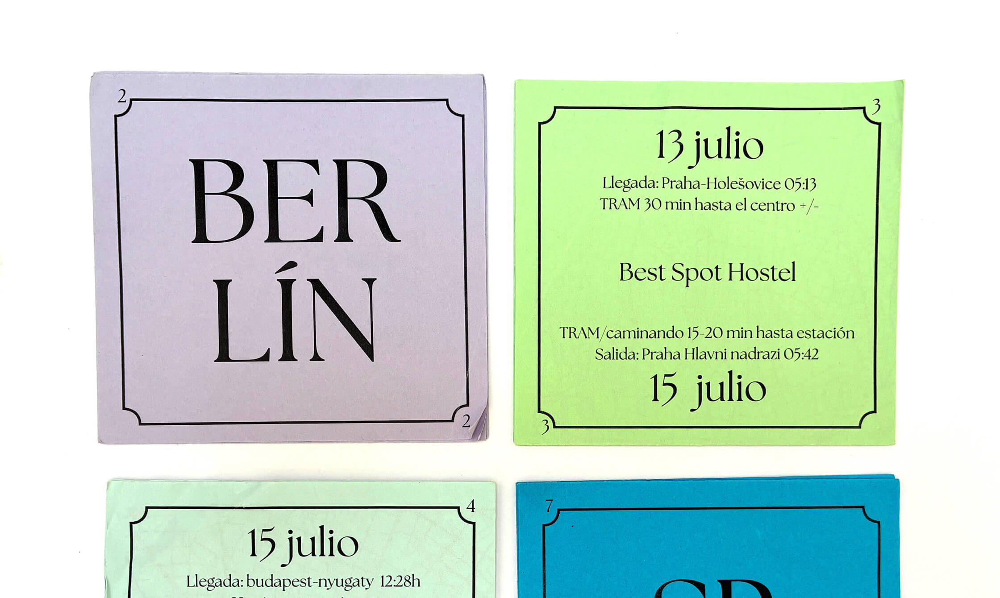
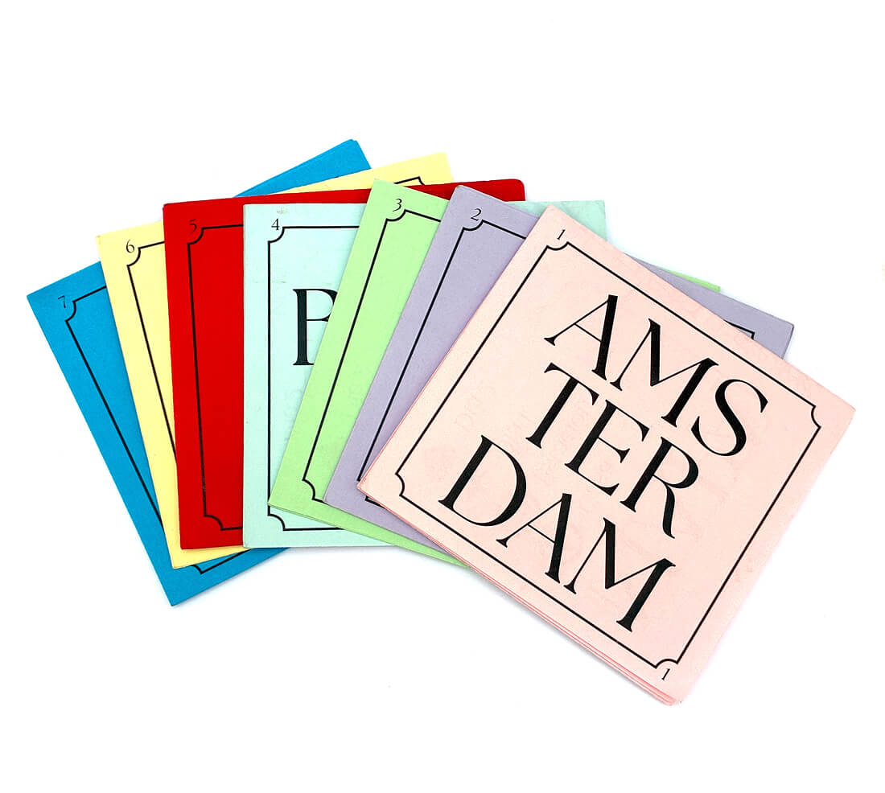
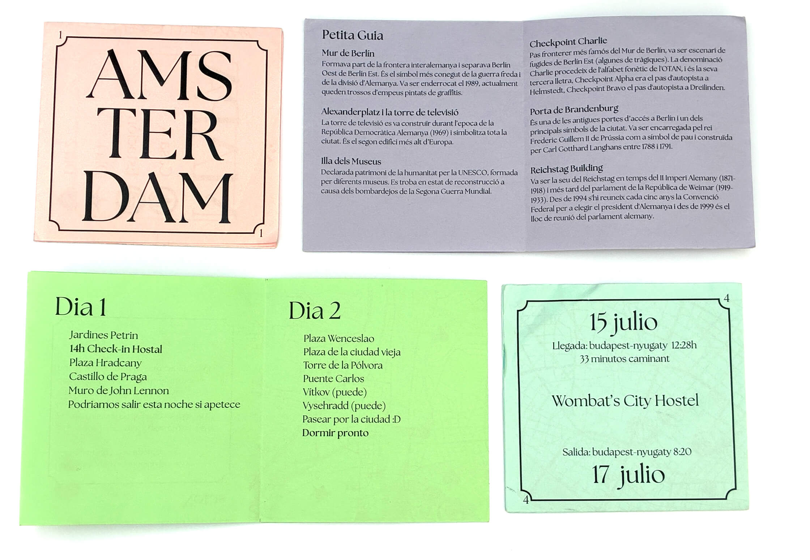
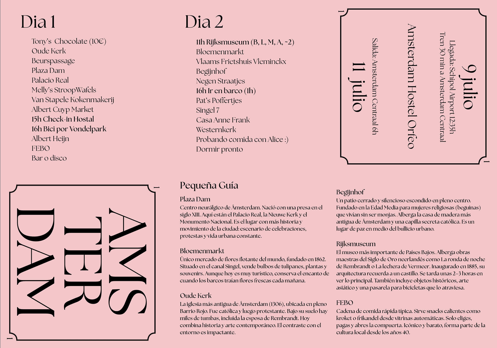
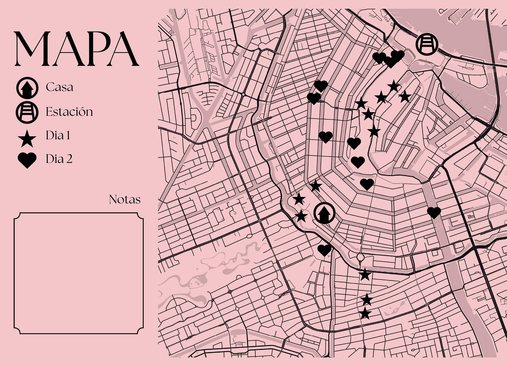

Interrail Travel Guide
2026
Personal Project

During a summer Interrail trip with friends, I designed a collection of personalized travel guides, one for each country we visited. Since each of us planned a different destination, I created a shared template to ensure all guides looked consistent.
The foldable design allowed for compact storage and easy unfolding to reveal a map, daily plans, and key information.
I digitized the layout using Canva, creating an accessible system so everyone could input their own content. Once finished, I printed each guide in a different color to distinguish the countries while keeping a strong, unified visual style.



